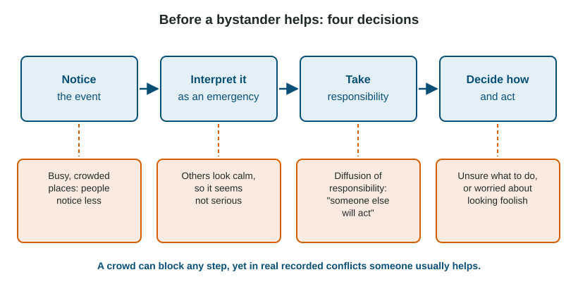

Most people believe their behavior comes from who they are. Social psychology keeps showing how much it also comes from where they are and who is around. This topic covers the pressures of social situations: norms and roles, conformity and obedience, persuasion, what groups do to individuals, and when people help.
Norms, roles and two kinds of social influence
A social norm is an unwritten rule for how to act (face the doors in an elevator, whisper in a library). A social role is a set of norms for a position, such as student, coach or nurse. People go along with others for two different reasons:
- Informational social influence: you follow others because you think they know the right answer. It is strongest when the situation is unclear, such as which fork to use at a formal dinner.
- Normative social influence: you go along to be liked or to avoid standing out, even if you privately disagree.
Conformity and obedience
Conformity is changing your behavior or beliefs to match a group. In Solomon Asch's 1950s line-judging studies, participants matched a line to one of three others after several confederates gave an obviously wrong answer. Participants went along on about a third of these trials, and about three quarters conformed at least once. Conformity rose as the unanimous group grew to about three people and then leveled off, and a single ally who gave the right answer sharply reduced it. Later studies found conformity in many countries, generally somewhat higher in more collectivist cultures and lower in the United States than in Asch's day.
Obedience is following the direct orders of an authority. In Stanley Milgram's 1963 study, 26 of 40 men (65%) kept giving what they believed were painful shocks up to the maximum of 450 volts because an experimenter told them to; the learner was a confederate and received no real shocks. Obedience fell when the experimenter gave orders by phone, when the "learner" was in the same room, or when other participants refused. Read this classic with its limits. It caused participants real distress and would not be approved today in its original form. A 2009 partial replication by Jerry Burger, stopped at 150 volts with careful screening, found 70% willing to continue past that point, not reliably lower than the rate at the same point in a comparable Milgram version, so high obedience does replicate. Researchers who examined Milgram's records also report that the scripted prompts were not always followed and that some participants doubted the shocks were real.
| Conformity | Obedience | |
|---|---|---|
| Source of pressure | peers, a group | an authority figure |
| Is there a direct order? | no | yes |
| Classic study | Asch's line judgments | Milgram's "shock" study |
Persuasion
The elaboration likelihood model says persuasion takes one of two routes. On the central route, a person who is motivated and able thinks carefully about the arguments and evidence; the resulting change tends to last. On the peripheral route, a person who is distracted or does not care much responds to surface cues such as a celebrity, music or how many arguments there are; the change tends to fade. The halo effect is one such cue: a single good trait, such as attractiveness, colors judgments of unrelated traits. Two request techniques are worth telling apart:
- Foot-in-the-door: small request first, then a larger one ("sign this petition," then "donate").
- Door-in-the-face: large request first, refused, then the smaller one you wanted ("write ten letters?" then "just one?").
What groups do
| Concept | What happens | Example |
|---|---|---|
| Social facilitation | Others' presence improves easy or practiced tasks and hurts hard or new ones | A pro plays better before a crowd; a beginner worse |
| Social loafing | Less effort when individual work is pooled and unidentified | One member coasts on a group poster |
| Deindividuation | Anonymity and arousal lower self-awareness and restraint | Wild behavior in a masked crowd |
| Group polarization | Discussion pushes a group further the way it already leaned | Mild agreement becomes strong agreement |
| Groupthink | Wish for harmony silences doubts and blocks careful analysis | A team approves a risky plan no one questions |
| False consensus effect | Overestimating how many share your views | "Everyone cheats a little, right?" |
Worked example: facilitation or loafing? Both involve other people. Ask whether the person's own performance is visible.
- A cyclist rides faster in a race against others than alone, and her time is recorded: her performance is visible and the task is well practiced. Social facilitation.
- Eight people pull a rope together, and only the total force is measured: no one's effort is identifiable. Each pulls less hard than alone: social loafing.
Groups can also cooperate. In Muzafer Sherif's 1954 summer camp study, two groups of boys became hostile through competition, and hostility eased when they had to work together on superordinate goals, such as fixing the camp's water supply. A social trap is the opposite problem: each person's sensible choice (watering a lawn in a drought) adds up to harm for all. Culture shapes all of this. Individualism stresses personal goals and independence; collectivism stresses group goals and relationships; multiculturalism values several cultures living side by side.
Industrial-organizational (I/O) psychology applies these ideas to work: hiring, training, leadership, motivation and health at work. One of its concerns is burnout: exhaustion, cynicism and lower effectiveness after long-term job stress, especially with heavy demands and little control.
Helping and the bystander effect

Altruism is unselfish concern for others. Two norms encourage helping: the reciprocity norm (return help to those who helped you) and the social responsibility norm (help those who depend on you). The bystander effect is the finding that each individual is less likely to help when other bystanders are present. In John Darley and Bibb Latané's 1968 study, students who believed they alone heard another student having a seizure over an intercom almost all went for help, while those who believed four others also heard were much less likely to. Two processes explain it: others' calm makes a situation seem less serious, and diffusion of responsibility makes each person feel someone else will act.
The finding is well replicated in lab studies of individuals. But the famous 1964 Kitty Genovese case, said to have 38 silent witnesses, was badly misreported: fewer people saw the attack, and some did call for help. And a 2020 study by Richard Philpot and colleagues, analyzing 219 real conflicts on security cameras in three countries, found that at least one bystander stepped in about 9 times out of 10, more often when more people were present. Both are true: each person is less likely to act in a crowd, yet a crowd usually contains someone who does.